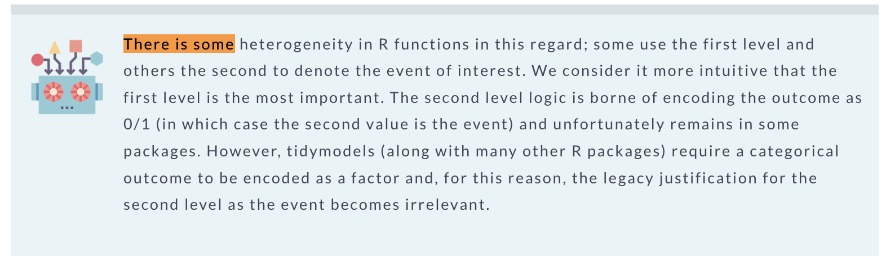

Computing Sensitivity and Specificity using tidymodels
Sensitivity
Tidymodels
Specificity
Authors
Francisco Cardozo
Kyle Grealis
Published
July 16, 2023
Sensitivity and specificity are two crucial metrics used to evaluate the performance of binary classification models. In this article, we delve into the process of computing these metrics using the ‘tidymodels’ package in R.
We begin by simulating a dataset. Assuming we have access to the true value of the phenomenon under consideration, as well as our model’s predictions, we can proceed to compute the sensitivity and specificity of our model.
Refresh your memory on the meaning of these terms by looking at the following table:
True 1 (Positive)
True 0 (Negative)
Predict 1 (Positive)
TP = 40
FP = 15
Predict 0 (Negative)
FN = 10
TN = 35
This table above is the confusion matrix, featuring the following terms:
TP (True Positive): Instances where the model correctly predicted the positive class.
TN (True Negative): Instances where the model correctly predicted the negative class.
FP (False Positive): Instances where the model incorrectly predicted the positive class.
FN (False Negative): Instances where the model incorrectly predicted the negative class.
However, the burning question remains: how do we calculate these in R? Let’s explore this while evaluating the performance of our models using the ‘tidymodels’ package.
Modeling with tidymodels
Let’s now assume that we have a dataset comprising Y and X values, and we aim to create a model that predicts Y based on X. We’ll use the same dataset we created earlier.
df <- confusion_matrix_long |>uncount(Count) |>rename(y =`True Class`, x =`Predicted Class`) # Rename the columns to shorter names
First, we’ll load the tidymodels library and specify our model.
# Load the tidymodels packagelibrary(tidymodels)# Define a logistic regression model specificationmodel_spec <-logistic_reg() |>set_engine("glm") |>set_mode("classification")# Define a recipe for preprocessing the datarecipe_glm <-recipe(y ~ x, data = df) |># Convert all nominal variables to dummy variablesstep_dummy(all_nominal(), -all_outcomes())
Let’s examine the dataset we’ve created.
# Preprocess the data using the recipe# This includes converting nominal variables to dummy variablesrecipe_glm |>prep() |># Apply the recipe to new databake(new_data = df) |># View the first few rows of the preprocessed data skimr::skim()
Data summary
Name
bake(prep(recipe_glm), ne…
Number of rows
100
Number of columns
2
_______________________
Column type frequency:
factor
1
numeric
1
________________________
Group variables
None
Variable type: factor
skim_variable
n_missing
complete_rate
ordered
n_unique
top_counts
y
0
1
FALSE
2
Tru: 50, Tru: 50
Variable type: numeric
skim_variable
n_missing
complete_rate
mean
sd
p0
p25
p50
p75
p100
hist
x_X1
0
1
0.55
0.5
0
0
1
1
1
▆▁▁▁▇
Remeber that our outcome is a binary variable with values True 0 and True 1.
Next, we can create a workflow that combines our recipe and the model specification, and fit the model.
# Define a workflow for fitting the logistic regression modelwr_glm <-workflow() |>add_recipe(recipe_glm) |>add_model(model_spec)# Fit the logistic regression model to the preprocessed datamodel <- wr_glm |>fit(data = df)# Extract the model coefficients and create a summary tablemodel |>extract_fit_parsnip() |>tbl_regression()
Characteristic
log(OR)
95% CI
p-value
x_X1
2.2
1.3, 3.2
<0.001
Abbreviations: CI = Confidence Interval, OR = Odds Ratio
So, we’ve established that the model predicts the Y values based on the X values. But how do we calculate the sensitivity and specificity using the model results?
First, we need to generate predictions. The augment() function from the dplyr package is an excellent choice for this task.
# Load the reactable packagelibrary(reactable)library(knitr)# Use the augment() function to add predicted values to the data framethe_predictions <- model |>augment(df) |># Rename the "y" column to "Observed"rename("Observed"="y")# Create an interactive table using the reactable::reactable() functionthe_predictions |>reactable(groupBy ="Observed",columns =list(x =colDef(aggregate ="unique"),.pred_class =colDef(aggregate ="unique"),`.pred_True 0`=colDef(aggregate ="mean", format =colFormat(digits =2)),`.pred_True 1`=colDef(aggregate ="mean", format =colFormat(digits =2)) ) )
At this point, we have both the predicted class and the observed class. We could use the same method we employed in the earlier demonstration (tbl_cross()), or we can make use of the sensitivity() and specificity() functions from the yardstick package. Let’s look at how this works.
Computing sensitivity and specificity using a cross table
Computing sensitivity and specificity using the yardstick package
Finally! we can use the sensitivity() and specificity() functions from the yardstick package to calculate the sensitivity and specificity of our model.
In the context of logistic regression, R’s default behavior is to take the first level of a factor as the reference category when using the glm function. This behavior becomes particularly important when we’re dealing with binary outcomes, often coded as 0 (absence of the event) and 1 (presence of the event). By default, R will take 0 as the reference level and compare it against 1, due to 0 coming before 1 in numerical order.
However, when we’re working with factors, the order in which they’re arranged is somewhat arbitrary and it doesn’t necessarily make sense to always treat 0 as the absence of an event and 1 as the presence of an event (Kuhn and Silge 2022).
This is from here or page 116 in the tidymodels book.

tidymodels. pag 116
The yardstick package interprets this setup a bit differently. It views the first factor as the most important, leading it to switch the factor levels in the process. This change in order may affect our sensitivity and specificity measures.
To maintain consistency with our earlier computations, it’s necessary to explicitly set the reference level in the sensitivity() and specificity() functions from the yardstick functions, using the event_level = “second” argument. This ensures that the factor levels are interpreted in a way that aligns with our initial demonstration.
This ‘switching’ behavior in yardstick is also apparent in the collect_metrics() function, making it essential to check the event level. Failure to do so may result in inadvertently switching the event level.
Summary
In this blog post, we’ve walked through the process of computing sensitivity and specificity using the tidymodels package in R, demonstrating it with a simulated dataset. These metrics are indispensable for evaluating the performance of binary classification models. Don’t forget: for the most accurate and realistic results, always evaluate your models using separate test data.